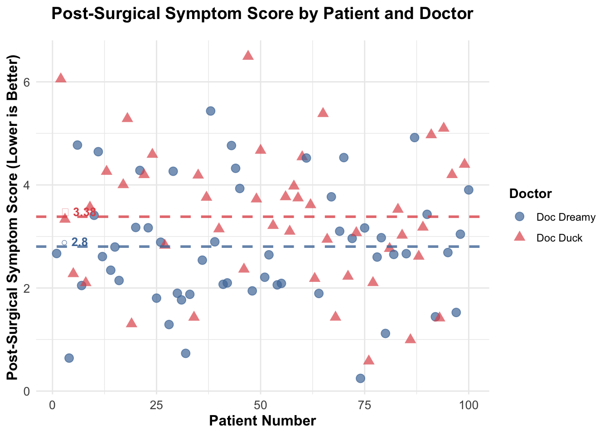
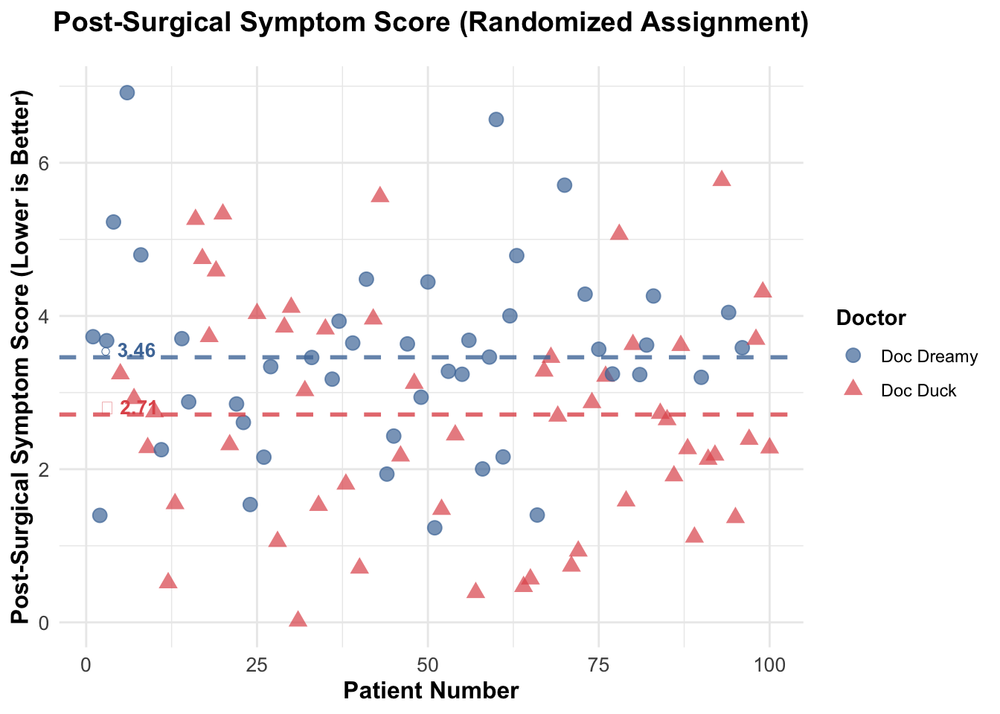
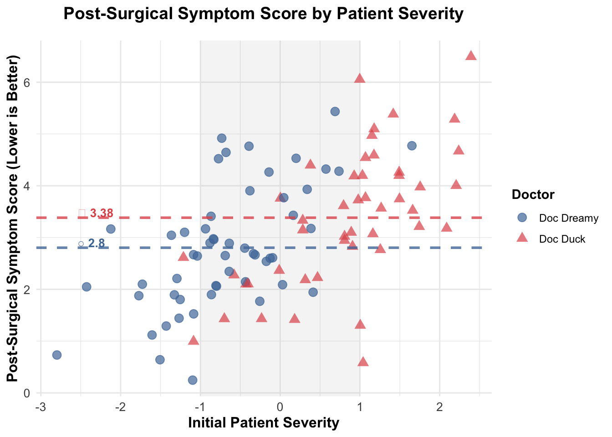

Imagine you need to choose between two surgeons of similar rank at the same hospital. The first surgeon, Doc Dreamy, matches our stereotype perfectly: refined appearance, silver-rimmed glasses, delicate hands, measured speech, and an office adorned with Ivy League diplomas (see the image). The second surgeon, Doc Duck, by contrast, looks more like a butcher—overweight, with large hands, an unkempt appearance, and no visible credentials on the wall.
Counterintuitively, the surgeon who doesn’t “look the part” may actually be the better choice. Why? Because when someone succeeds in their profession despite not fitting the expected appearance, it suggests they had to overcome significant perceptual biases. And if we are lucky enough to have people who do not look the part, it is thanks to the presence of some skin in the game, the contact with reality that filters out incompetence. (Taleb 2017)
Observational Data: A Misleading Victory for Doc Dreamy
# Load the observational datapatients_df <-read.csv('patients_data.csv')# Display first few rows to understand the structurecat("Number of patients:", nrow(patients_df), "\n")
So I started by looking at the data to see which surgeon actually performs better. Looking at Figure 1, I plotted the post-surgical symptom scores for all 100 patients. What I found was pretty clear: Doc Dreamy’s average score was 2.8, while Doc Duck’s was 3.38. Since lower scores mean better outcomes, this suggests Doc Dreamy is the better surgeon. I even ran a t-test to check if this difference was statistically significant, and it was (t = -2.317, p = 0.023). So at first glance, the data seems to show that Doc Dreamy is definitely better.
Figure 1: Post-Surgical Outcomes by Patient
Warning in element_line(alpha = 0.3): `...` must be empty.
✖ Problematic argument:
• alpha = 0.3

Figure 1: Post-Surgical Symptom Score (lower is better) - Observed Data
The Hidden Confounder: Patient Severity Explains It All
When I first looked at Figure 1, my brain wanted to jump to the simplest conclusion - the one shown in Figure 2.
Figure 2: DAG Model Explaining Surgical Outcomes
It seems obvious: Doc Dreamy must be the better surgeon because his patients have lower scores. That’s what the data shows, right?
But then I learned about something called a “common cause confounder” that can trick you. Basically, sometimes two things look related, but they’re not actually causing each other - they’re both being caused by something else. Like, if you see puddles on the road and people with umbrellas, you might think puddles cause umbrellas. But really, rain causes both - the puddles AND the umbrellas. So there’s a spurious correlation that isn’t actually causal.
This made me think: what if there’s a hidden factor affecting both surgeon choice AND surgical outcomes? Looking at Figure 3, I started wondering if patient severity might be that hidden factor.
Figure 3: DAG Model Explaining Surgical Outcomes
Here’s what I think might be happening: Doc Dreamy books surgeries 3 weeks out, while Doc Duck can see patients in just 1 week. So patients who aren’t in a rush (usually the less severe cases) can wait and choose Doc Dreamy based on his nice website and professional photo. But patients who are really sick and need surgery ASAP (the more severe cases) don’t have time to wait - they go with Doc Duck because he’s available right away. This means Doc Dreamy gets easier cases, and Doc Duck gets the harder ones.
WarningAssumption: Slow Progression of Patient Severity
For simplicity, we assume that patient severity progresses slowly enough that a 2-week delay (i.e., waiting for Dr. Dreamy’s availability) has zero effect on surgical outcomes. This delay affects only how quickly patients receive surgical relief, not the eventual outcome itself. While time-to-surgery can be an important factor in other contexts, here we focus solely on whether initial patient severity might create a spurious or biased association between surgeon choice and outcomes.
Solution 1: Randomization — Break the Confounding Path
The best way to figure out if something actually causes an outcome is through a randomized controlled trial. Instead of letting patients pick their surgeon, what if we just randomly assigned them? That way, patient severity wouldn’t influence which surgeon they get - it would be completely random.
This is exactly what randomization is for. By randomly assigning patients, we break the connection between patient severity and surgeon choice. Now it’s not about who can wait or who needs surgery fast - it’s just random chance. This is shown in Figure 4.
Figure 4: DAG Model Explaining Surgical Outcomes
In this randomized scenario, patient severity no longer determines which surgeon you get. Instead, randomization does. This breaks the confounding relationship, so we can actually see if the surgeon themselves matter, or if it was all about patient severity.
But wait - how do we know what would have happened?
NoteWhat is a counterfactual?
A counterfactual is basically asking “what if?” - like, what would have happened to each patient if they got the OTHER surgeon instead? We can never actually know this because each patient only got one surgeon. It’s like asking what would have happened in a parallel universe.
The problem is we can’t go back in time and reassign those original patients. They already went to whoever they chose (or whoever was available). So to test what happens with randomization, we need to run a new experiment. I randomly assigned 100 new patients to either Doc Dreamy or Doc Duck, completely ignoring their severity. Here’s what happened:
# Load the randomized datapatients_randomized_df <-read.csv('patients_data_randomized.csv')# Display first few rowscat("Number of randomized patients:", nrow(patients_randomized_df), "\n")
Looking at Figure 5, the results are completely different! With random assignment, Doc Duck’s average score is 2.71 and Doc Dreamy’s is 3.46. Since lower is better, Doc Duck is actually performing better. I ran another t-test and the difference is statistically significant (t = 2.734, p = 0.007). This is crazy - not only is Doc Dreamy NOT the better surgeon, he’s actually worse! The original data totally misled me because of the confounding.
Figure 2: Randomized Assignment Outcomes
Warning in element_line(alpha = 0.3): `...` must be empty.
✖ Problematic argument:
• alpha = 0.3

Figure 5: Post-Surgical Symptom Score (lower is better) for randomized patients.
Solution 2: Stratification — When You Can’t Randomize
But what if you can’t randomize? Like, you already have the data and you can’t go back and reassign people. That’s where stratification comes in. The idea is to look at patients who are similar in terms of the confounder (severity), and then compare surgeons within those groups. So instead of comparing all of Doc Dreamy’s patients to all of Doc Duck’s patients, we compare them only within similar severity groups.
I made a plot showing patient severity on the x-axis and post-surgical scores on the y-axis. This lets us see what happens when we compare like to like.
Figure 3: Outcomes by Patient Severity (Stratification)
Warning in element_line(alpha = 0.3): `...` must be empty.
✖ Problematic argument:
• alpha = 0.3

Figure 6: Post-Surgical Symptom Score (lower is better) by Patient and Severity
Looking at Figure 6, I focused on the region between -1 and 1 on the severity scale (the gray shaded area). I picked this because both surgeons have a lot of patients in this range, so we can actually compare them fairly. Outside this range, there’s not much overlap - Doc Duck has way more high-severity patients (to the right), and Doc Dreamy has more low-severity ones (to the left).
But here’s the key: within that highlighted region where we can compare them fairly, Doc Dreamy’s points (blue circles) are actually higher (worse) than Doc Duck’s points (red triangles). You can also see that overall, Doc Duck’s patients are shifted to the right on the severity axis - meaning he’s getting the sicker patients. This is exactly what you’d expect if severity is causing both surgeon choice AND outcomes.
So even though the overall average makes Doc Dreamy look better, when I compare them on similar patients, Doc Duck actually does better. The original conclusion was totally wrong because I wasn’t accounting for the severity confounder.
What I Learned: Understanding Confounding
This whole thing really opened my eyes to how easy it is to be fooled by data. The numbers don’t lie, but they might be answering a different question than you think.
At first, the raw data made it look like Doc Dreamy was clearly better. His average scores were lower, which is good. But here’s the thing - correlation doesn’t mean causation. I know we all hear that, but I never really understood it until now. Our brains want to see patterns and find causes, so we jump to conclusions.
The real problem here is patient severity. It’s like this hidden puppeteer pulling strings behind the scenes. It makes Doc Dreamy look amazing by giving him all the easy cases, while Doc Duck gets stuck with the really sick patients. Without randomization, there’s no way to tell if Doc Dreamy is actually better, or if he just got lucky with easier patients.
Randomization fixes this. When you randomly assign patients, severity can’t influence who gets which surgeon. It’s like flipping a coin - completely random. And when I did that, the truth came out: Doc Duck is actually the better surgeon. The data wasn’t wrong before, it was just answering “who has better outcomes given their patient assignments” instead of “who is the better surgeon.”
But most of the time, you can’t randomize. You already have the data. That’s when you use stratification - you compare surgeons only within groups of similar patients. It’s like comparing apples to apples instead of apples to oranges. It’s not as clean as randomization, but it’s way better than being completely wrong.
Conclusion
So here’s what I learned from this whole analysis: the differences in outcomes are mostly because of patient severity, not because of which surgeon is better. When I first looked at the data, it seemed obvious that Doc Dreamy was better - his patients had lower scores. But I was totally wrong because I didn’t account for the confounding.
Once I randomized the assignments, the real story came out. Doc Duck’s patients actually had better outcomes (average 2.71 vs. 3.46). The original data was completely backwards!
When I stratified by severity and compared surgeons on similar patients, the same pattern showed up - Doc Duck does better. The only reason Doc Dreamy looked good in the original data is because he got all the easy cases, while Doc Duck got stuck with the really sick patients.
Bottom line: you can’t tell if the surgeon actually matters without dealing with the confounding. If you don’t randomize or stratify, you have no idea if the differences you see are because of the surgeon’s skill or just because of differences in the patients they’re treating. This is why randomized controlled trials are so important - they’re the gold standard. But when you can’t randomize, stratification is your next best option.
The main thing I’m taking away from this is that data can be really misleading if you don’t think carefully about what might be confounding your results. Drawing a DAG and thinking about what causes what helps a lot. Randomize when you can, stratify when you can’t. The methods aren’t that complicated - the hard part is remembering to actually use them instead of just trusting the first thing you see in the data.